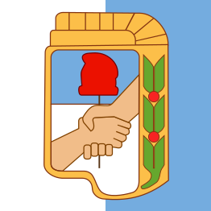

Consultá al General
No te olvides de apretar el botón, compañero
0 / 220
🪙
✕
J. D. PERÓN
PARTIDO

JUSTICIALISTA
EVA PERÓN
ELECCIÓN DOCTRINARIA · BOLETA DE LA CONDUCCIÓN
Consulta formulada
MENSAJE
— Juan Domingo Perón
🔍 AMPLIAR
↺ NUEVA CONSULTA
— ESCRIBÍ TU CONSULTA Y RECIBÍ EL AGUINALDO DE LA SUERTE —